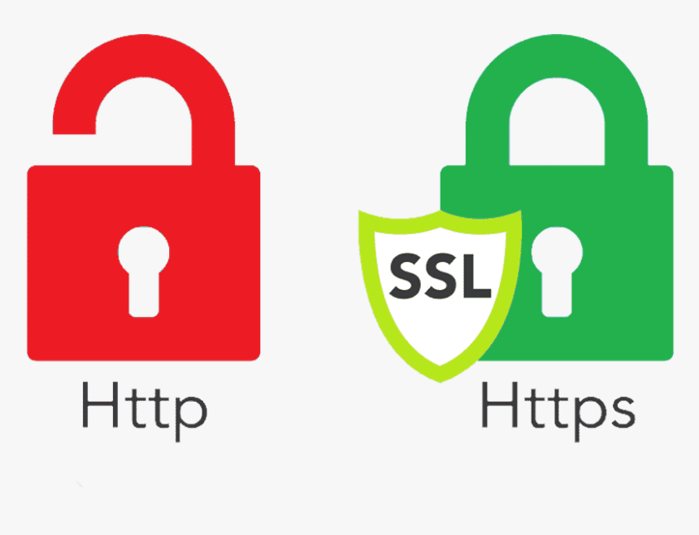

Transport Layer Security (TLS), and its now-deprecated predecessor, Secure Sockets Layer (SSL),[1] are cryptographic protocols designed to provide communications security over a computer network.[2] Several versions of the protocols find widespread use in applications such as web browsing, email, instant messaging, and voice over IP (VoIP). Websites can use TLS to secure all communications between their servers and web browsers. The TLS protocol aims primarily to provide privacy and data integrity between two or more communicating computer applications.[2]:3 When secured by TLS, connections between a client (e.g., a web browser) and a server (e.g., wikipedia.org) should have one or more of the following properties: The connection is private (or secure) because symmetric cryptography is used to encrypt the data transmitted. The keys for this symmetric encryption are generated uniquely for each connection and are based on a shared secret that was negotiated at the start of the session (see § TLS handshake). The server and client negotiate the details of which encryption algorithm and cryptographic keys to use before the first byte of data is transmitted (see § Algorithms below). The negotiation of a shared secret is both secure (the negotiated secret is unavailable to eavesdroppers and cannot be obtained, even by an attacker who places themselves in the middle of the connection) and reliable (no attacker can modify the communications during the negotiation without being detected). The identity of the communicating parties can be authenticated using public-key cryptography. This authentication can be made optional, but is generally required for at least one of the parties (typically the server). The connection is reliable because each message transmitted includes a message integrity check using a message authentication code to prevent undetected loss or alteration of the data during transmission.[2]:3
